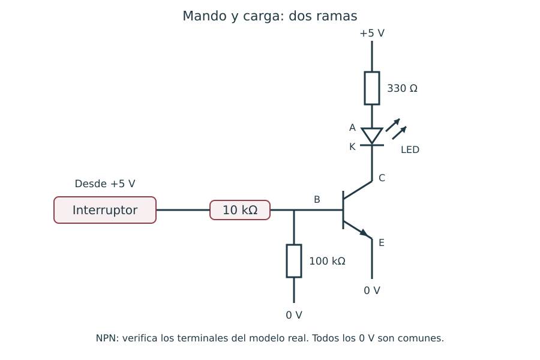

Contenido
Actividades a tu ritmo
Abrir actividades sin cronómetro y con teclado (ventana nueva). Incluyen todas las preguntas de esta página, sus soluciones y explicaciones. Puedes elegir esta vía en lugar de los juegos del final.
En esta unidad usamos un transistor NPN para controlar una pequeña carga. Sus terminales son base, colector y emisor. La posición física cambia según el modelo: identifica los terminales en la ficha del transistor antes de insertarlo.

Dos estados útiles
- Corte: sin corriente suficiente de base, la corriente de colector es muy pequeña y la carga permanece apagada.
- Saturación: con excitación de base suficiente para la carga, la tensión colector–emisor es pequeña y el transistor se aproxima a un interruptor cerrado.
Entre ambos estados hay una zona intermedia. Un detector sencillo puede encender gradualmente el LED cerca del umbral. No todo voltaje de base superior a un valor fijo garantiza saturación: también importan la corriente disponible y la carga.
Montaje de partida
Alimenta con 5 V. Conecta +5 V → 330 Ω → ánodo (A) del LED; cátodo (K, barra del símbolo) → colector; emisor → 0 V. La base recibe alimentación a través de 10 kΩ y un interruptor. Añade 100 kΩ entre base y emisor para mantener apagado el transistor con el interruptor abierto. Usa un NPN apropiado para esta pequeña carga, con terminales y límites comprobados.
Del interruptor al sensor
Simula el montaje con el interruptor abierto y cerrado. Observa el LED y mide VCE. En el apartado 4 del informe, dibuja las dos ramas, identifica la resistencia de base y explica por qué la corriente del LED no atraviesa esa resistencia.
Verdadero o falso
Decide si la afirmación es verdadera o falsa y contrasta la explicación.
00:00:
Relaciona
Relaciona cada elemento con su descripción.
Relaciona cada elemento con su descripción.
", "showMinimize": false, "itinerary": {"showClue": false, "clueGame": "", "percentageClue": 40, "showCodeAccess": false, "codeAccess": "", "messageCodeAccess": ""}, "cardsGame": [{"url": "", "x": 0, "y": 0, "author": "", "alt": "", "audio": "", "color": "#000000", "backcolor": "#ffffff", "eText": "Base", "urlBk": "", "xBk": 0, "yBk": 0, "authorBk": "", "altBk": "", "audioBk": "", "colorBk": "#000000", "backcolorBk": "#ffffff", "eTextBk": "Terminal%20por%20el%20que%20se%20excita%20el%20transistor"}, {"url": "", "x": 0, "y": 0, "author": "", "alt": "", "audio": "", "color": "#000000", "backcolor": "#ffffff", "eText": "Corte", "urlBk": "", "xBk": 0, "yBk": 0, "authorBk": "", "altBk": "", "audioBk": "", "colorBk": "#000000", "backcolorBk": "#ffffff", "eTextBk": "Estado%20con%20corriente%20de%20colector%20muy%20peque%C3%B1a"}, {"url": "", "x": 0, "y": 0, "author": "", "alt": "", "audio": "", "color": "#000000", "backcolor": "#ffffff", "eText": "Saturaci%C3%B3n", "urlBk": "", "xBk": 0, "yBk": 0, "authorBk": "", "altBk": "", "audioBk": "", "colorBk": "#000000", "backcolorBk": "#ffffff", "eTextBk": "Estado%20con%20tensi%C3%B3n%20colector-emisor%20peque%C3%B1a"}, {"url": "", "x": 0, "y": 0, "author": "", "alt": "", "audio": "", "color": "#000000", "backcolor": "#ffffff", "eText": "Resistencia%20del%20LED", "urlBk": "", "xBk": 0, "yBk": 0, "authorBk": "", "altBk": "", "audioBk": "", "colorBk": "#000000", "backcolorBk": "#ffffff", "eTextBk": "Limita%20la%20corriente%20de%20la%20rama%20de%20salida"}], "isScorm": 0, "textButtonScorm": "Guardar la puntuación", "repeatActivity": true, "weighted": 100, "textAfter": "", "version": 2, "percentajeCards": 100, "type": 0, "showSolution": true, "timeShowSolution": 3, "time": 3, "evaluation": false, "evaluationID": "f96bc37c-5aaf-40e4-af65-a544218a46a6", "id": "idevice-1790074617752-qrmiabpwp", "msgs": {"msgSubmit": "Enviar", "msgClue": "¡Genial! La pista es:", "msgCodeAccess": "Código de acceso", "msgPlayStart": "Pulsa aquí para jugar", "msgScore": "Puntuación", "msgErrors": "Errores", "msgHits": "Aciertos", "msgMinimize": "Minimizar", "msgMaximize": "Maximizar", "msgFullScreen": "Pantalla Completa", "msgExitFullScreen": "Salir del modo pantalla completa", "msgNoImage": "Pregunta sin imágenes", "msgEndGameScore": "Comience la partida antes de guardar la puntuación.", "msgScoreScorm": "La puntuación no se puede guardar porque esta página no forma parte de un paquete SCORM.", "msgOnlySaveScore": "¡Solo puede guardar la puntuación una vez!", "msgOnlySave": "Solo puede guardar una vez", "msgInformation": "Información", "msgYouScore": "Su puntuación", "msgAuthor": "Autoría", "msgOnlySaveAuto": "Su puntuación se guardará después de cada pregunta. Solo puede jugar una vez.", "msgSaveAuto": "Su puntuación se guardará automáticamente después de cada pregunta.", "msgSeveralScore": "Puede guardar la puntuación tantas veces como quiera", "msgYouLastScore": "La última puntuación guardada es", "msgActityComply": "Ya ha realizado esta actividad.", "msgPlaySeveralTimes": "Puede realizar esta actividad cuantas veces quiera", "msgClose": "Cerrar", "msgAudio": "Audio", "msgNumQuestions": "Número de tarjetas", "msgTryAgain": "Necesitas al menos %s% de respuestas correctas para obtener la información. Inténtalo de nuevo.", "msgEndGameM": "Has completado el juego. Tu puntuación es %s.", "msgUncompletedActivity": "Actividad no completada", "msgSuccessfulActivity": "Actividad superada. Puntuación: %s", "msgUnsuccessfulActivity": "Actividad no superada. Puntuación: %s", "msgTypeGame": "Relaciona", "msgCheck": "Comprobar", "msgRestart": "Reiniciar"}}